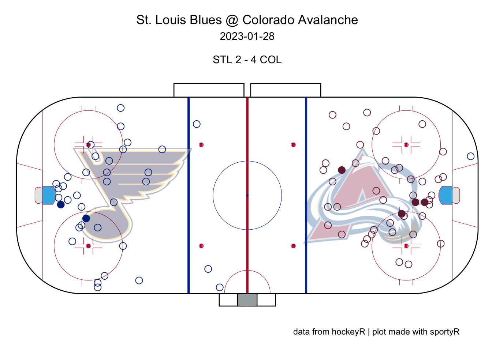

Chapter 6 Measures of Association
This chapter will examine various measures of association betweeen two or more variables. A popular measure of association is Pearson’s Correlation Coefficient for two continuous, quantitative variables. Other measures of association are more appropriate for other types of data like qualitative data.
6.1 Pearson Correlation Coefficient
Definition 6.1 The Pearson correlation coefficient (also known as Pearson’s R or correlation coefficient) is a measure of linear relationship between two quantitative variables.
For two random variables, \(X\) and \(Y\), the Pearson correlation coefficient, \(\rho\), is:
\(\rho = \frac{Cov(X,Y)}{\sigma_X \sigma_Y}\)
For two sets of sample data, \(\{x_1,x_2,\ldots,x_n\}\) and \(\{y_1,y_2,\ldots,y_n\}\), the Pearson correlation coefficient is:
\(r_{xy} = \frac{\sum_{i=1}^n (x_i-\bar{x})(y_i-\bar{y})}{\sqrt{\sum_{i=1}^n(x_i-\bar{x})^2}\sqrt{\sum_{i=1}^n(y_i-\bar{y})^2}}\)
Example 6.1 Download pitching data for individual pitchers in the 2022 MLB season. Investigate the correlation between common pitching statistics.
library(tidyverse)
library(knitr)
library(baseballr)
mlb22_all <- bref_daily_pitcher("2022-01-01", "2022-12-31") %>%
fip_plus()
mlb22_pitch <- mlb22_all %>%
dplyr::select(Name, IP, SO, uBB, HR, ERA, FIP) %>%
dplyr::arrange(dplyr::desc(IP))
mlb22_pitch %>%
head(n=10) %>%
kable(booktabs=T)| Name | IP | SO | uBB | HR | ERA | FIP |
|---|---|---|---|---|---|---|
| Sandy Alcantara | 228.2 | 207 | 49 | 16 | 2.28 | 2.97 |
| Aaron Nola | 205.0 | 235 | 28 | 19 | 3.25 | 2.57 |
| Miles Mikolas | 202.1 | 153 | 39 | 25 | 3.29 | 3.87 |
| Corbin Burnes | 202.0 | 243 | 51 | 23 | 2.94 | 3.14 |
| Framber Valdez | 201.1 | 194 | 67 | 11 | 2.82 | 3.06 |
| Gerrit Cole | 200.2 | 257 | 50 | 33 | 3.50 | 3.47 |
| Merrill Kelly | 200.1 | 177 | 59 | 21 | 3.37 | 3.62 |
| Shane Bieber | 200.0 | 198 | 36 | 18 | 2.88 | 2.87 |
| Alek Manoah | 196.2 | 180 | 51 | 16 | 2.24 | 3.35 |
| MartÃn Pérez | 196.1 | 169 | 69 | 11 | 2.89 | 3.26 |
library(GGally)
mlb22_pitch %>% select(-Name) %>% ggpairs()library(ellipse)
library(RColorBrewer)
# Use of the mtcars data proposed by R
data <- mlb22_pitch %>% select(-Name) %>% cor()
# Build a Pannel of 100 colors with Rcolor Brewer
my_colors <- brewer.pal(5, "Spectral")
my_colors <- colorRampPalette(my_colors)(100)
# Order the correlation matrix
ord <- order(data[1, ])
data_ord <- data[ord, ord]
plotcorr(data_ord, col=my_colors[data_ord*50+50], mar=c(1,1,1,1))
# Example adapted from:
# https://r-graph-gallery.com/273-custom-your-scatterplot-ggplot2.html
library(ggpubr)
mlb22_pitch %>%
ggplot(aes(x=IP,y=SO)) +
geom_point(
color="black",
fill="#69b3a2",
shape=22,
alpha=0.5,
size=2
) +
geom_smooth(method=lm,se=F,color="black") +
labs(title = "Innings Pitched vs. Strikeouts",
subtitle = "2022 MLB Season | Individual Pitchers",
caption = "Data: Baseball Reference via baseballr",
x = "Innings Pitched (IP)",
y = "Strikeouts (SO)") +
stat_cor(method = "pearson", label.x = 155, label.y = 70)library(ggExtra)
p <- mlb22_pitch %>%
ggplot(aes(x=SO,y=ERA)) +
geom_point()
ggMarginal(p, type="histogram")
library(RColorBrewer)
color_pal <- brewer.pal(n = 8, name = "Dark2")
p <- mlb22_pitch %>% filter(ERA <= 10.00) %>%
ggplot(aes(x=SO,y=ERA)) +
geom_point(alpha=0.5,color=color_pal[1]) +
geom_smooth(method="lm",color=color_pal[2]) +
stat_cor(method = "pearson", label.x = 185, label.y = 5.8) +
labs(title = "Strikeouts (SO) vs. Earned Run Average (ERA)",
subtitle = "2022 MLB Season | Individual Pitchers",
caption = "Data: Baseball Reference via baseballr",
x = "Innings Pitched (IP)",
y = "Earned Run Average (ERA)")
ggMarginal(p, type="histogram")## `geom_smooth()` using formula = 'y ~ x'
## `geom_smooth()` using formula = 'y ~ x'
## `geom_smooth()` using formula = 'y ~ x'
mlb22_pitch %>%
ggplot(aes(x=ERA,y=FIP)) +
geom_point(alpha=0.5,color=color_pal[1]) +
scale_x_continuous(limits=c(0,5)) +
scale_y_continuous(limits=c(0,5)) +
labs(
title = "Earned Run Average (ERA) vs. Fielding Independent Pitching (FIP)",
subtitle = "2022 MLB Season | Individual Pitchers",
caption = "Data: Baseball Reference via baseballr",
x = "Earned Run Average (ERA)",
y = "Fielding Independent Pitching (FIP)")
rox22_pitch <- mlb22_all %>%
select(Name,Team,IP,H,uBB,ERA,FIP) %>%
filter(Team=="Colorado")
rox22_pitch %>%
arrange(desc(IP)) %>%
kable(booktabs=T)| Name | Team | IP | H | uBB | ERA | FIP |
|---|---|---|---|---|---|---|
| Germán Márquez | Colorado | 181.2 | 185 | 63 | 4.95 | 4.72 |
| Kyle Freeland | Colorado | 174.2 | 193 | 53 | 4.53 | 4.21 |
| Chad Kuhl | Colorado | 137.0 | 155 | 57 | 5.72 | 5.24 |
| Austin Gomber | Colorado | 124.2 | 137 | 33 | 5.56 | 4.52 |
| Ryan Feltner | Colorado | 97.1 | 102 | 35 | 5.83 | 4.76 |
| Antonio Senzatela | Colorado | 92.1 | 133 | 23 | 5.07 | 4.06 |
| Daniel Bard | Colorado | 60.1 | 35 | 24 | 1.79 | 2.81 |
| Carlos Estévez | Colorado | 57.0 | 44 | 22 | 3.47 | 4.02 |
| Jake Bird | Colorado | 47.2 | 45 | 20 | 4.91 | 4.79 |
| Jhoulys ChacÃn | Colorado | 47.1 | 55 | 21 | 7.61 | 4.94 |
| Alex Colomé | Colorado | 47.0 | 57 | 20 | 5.74 | 4.41 |
| Ty Blach | Colorado | 44.1 | 51 | 9 | 5.89 | 3.72 |
| Lucas Gilbreath | Colorado | 43.0 | 37 | 26 | 4.19 | 3.53 |
| Justin Lawrence | Colorado | 42.2 | 44 | 22 | 5.70 | 3.40 |
| Tyler Kinley | Colorado | 24.0 | 21 | 6 | 0.75 | 1.74 |
| Ashton Goudeau | Colorado | 20.1 | 25 | 10 | 7.08 | 4.95 |
| Chad Smith | Colorado | 18.0 | 16 | 15 | 7.50 | 4.83 |
| Gavin Hollowell | Colorado | 7.0 | 7 | 4 | 7.71 | 4.40 |
| Jordan Sheffield | Colorado | 2.0 | 2 | 2 | 0.00 | 5.11 |
| Noah Davis | Colorado | 1.0 | 3 | 1 | 18.00 | 15.11 |
| Brian Serven | Colorado | 1.0 | 0 | 1 | 0.00 | 6.11 |
| Randal Grichuk | Colorado | 1.0 | 0 | 0 | 0.00 | 3.11 |
rox22_pitch %>%
ggplot(aes(x=H,y=uBB,size=IP)) +
geom_point(alpha=0.5,color=color_pal[1]) +
labs(title = "Colorado Rockies Pitchers: Hits Allowed vs. Unintentional Walks",
subtitle = "2022 MLB Season | Individual Pitchers",
caption = "Data: Baseball Reference via baseballr",
x = "Hits Allowed (H)",
y = "Unintentional Walks (uBB)")
6.1.1 Partial Correlation and Confounding Variables
As seen in the previous example, counting statistics are often highly correlated. In particular, we may want to speculate that pitchers with poor control (high walks) tend to give up lots of hits due to poor control. This is only due to the presence of a lurking variable (innings pitched). To account for a lurking variable, one can calculate partial correlation coefficient in such situations.
Example 6.2 Let \(X,Y,Z\) be random variables and let \(r_{XY}\) be the (standard) correlation coefficient between \(X\) and \(Y\). The partial correlation coefficient of \(X\) and \(Y\), controlling for \(Z\) is:
\(r_{XY \bullet Z} = \frac{r_{XY}-r_{XZ}r_{YZ}}{\sqrt{1-r_{XZ}^2}\sqrt{1-r_{YZ}^2}}\)
Example 6.3 Calculate the correlation between strikeouts and (unintentional) walks for pitchers with at least 20 IP during the 2022 season, with and without controlling for innings pitched.
( cor_matrix <- mlb22_all %>% select(H,uBB,IP) %>% cor() )## H uBB IP
## H 1.0000000 0.8766316 0.9698289
## uBB 0.8766316 1.0000000 0.8927844
## IP 0.9698289 0.8927844 1.0000000( cor_without <- cor_matrix[1,2] )## [1] 0.8766316( cor_with <- (cor_matrix[1,2] - cor_matrix[1,3]*cor_matrix[2,3]) /
(sqrt(1-cor_matrix[1,3]^2)*sqrt(1-cor_matrix[2,3]^2)) )## [1] 0.098190686.1.2 Properties of the Linear Correlation Coefficient
Pearson’s correlation coefficient is unaffected by changes in location (adding a constant) or scale (multiplying by a constant) of data. To illustrate this concept, let’s consider the correlation between the number of points scored by the winning team of the Super Bowl and 1) the number of the Super Bowl {1, 2, 3, … , 56} and 2) the year of the Super Bowl {1967, 1968, 1969, … , 2022}.

cor(Super_Bowl_Number, Winning_Team_Points)## [1] 0.1063479cor(Super_Bowl_Year, Winning_Team_Points)## [1] 0.1063479The only difference between the two plots is that the x-axis is shifted. Since the change is essentially a linear (location) transformation, the correlations are identical.
Note: The correlations were equal only because there has been a one-to-one relationship between Super Bowl number and year since 1967. Major League Baseball has had years in which no World Series was held (1904 - boycott, 1994 - players’ strike); thus, the same example applied to the MLB would produce slightly different correlation coefficients.
6.2 Association of Categorical Variables
While Pearson’s correlations can be used to find associations between categorical variables, there are better measures to be used.
Example 6.4 (From Analytic Methods in Sports) Suppose we are given the following partial contingency table that tabulates the number of “complete games” for a starting pitcher by league.
| Yes | No | Total | |
|---|---|---|---|
| NL | 2592 | ||
| AL | 2268 | ||
| Total | 128 | 4732 | 4860 |
Choose values to give the largest and smallest correlations.
Example 1: Small correlation
League <- c(rep(0,2592),rep(1,2268))
Complete <- rep(0,4860)
Complete[1:68] = 1
Complete[2593:(2593+59)]=1
small_corr <- data.frame(League,Complete)
small_corr_table <- table(small_corr)
rownames(small_corr_table) = c("NL","AL")
colnames(small_corr_table) = c("No","Yes")
small_corr_table %>% kable(booktabs=T,digits = 3)| No | Yes | |
|---|---|---|
| NL | 2524 | 68 |
| AL | 2208 | 60 |
cor(small_corr) %>% kable(booktabs=T,digits = 3)| League | Complete | |
|---|---|---|
| League | 1.000 | 0.001 |
| Complete | 0.001 | 1.000 |
Example 2: Large correlation (1)
Complete <- rep(0,4860)
Complete[1:128] = 1
large_corr1 <- data.frame(League,Complete)
large_corr1_table <- table(large_corr1)
rownames(large_corr1_table) = c("NL","AL")
colnames(large_corr1_table) = c("No","Yes")
large_corr1_table %>% kable(booktabs=T,digits = 3)| No | Yes | |
|---|---|---|
| NL | 2464 | 128 |
| AL | 2268 | 0 |
cor(large_corr1) %>% kable(booktabs=T,digits = 3)| League | Complete | |
|---|---|---|
| League | 1.000 | -0.154 |
| Complete | -0.154 | 1.000 |
Example 3: Large correlation (2)
Complete <- rep(0,4860)
Complete[2593:(2593+127)] = 1
large_corr2 <- data.frame(League,Complete)
large_corr2 <- data.frame(League,Complete)
large_corr2_table <- table(large_corr2)
rownames(large_corr2_table) = c("NL","AL")
colnames(large_corr2_table) = c("No","Yes")
large_corr2_table %>% kable(booktabs=T,digits = 3)| No | Yes | |
|---|---|---|
| NL | 2592 | 0 |
| AL | 2140 | 128 |
cor(large_corr2) %>% kable(booktabs=T,digits = 3)| League | Complete | |
|---|---|---|
| League | 1.000 | 0.176 |
| Complete | 0.176 | 1.000 |
6.2.1 Odds Ratios
Let \(X\) and \(Y\) be two binary, categorical variables with the following contingency table.
| Y X | Yes | No | Total |
| No | a | c | a+c |
| Yes | b | d | b+d |
| Total | a+b | c+d | a+b+c+d |
One possible way to measure the association between two binary variables is to look at the odds ratio.
Definition 6.2 The odds ratio (OR) is a measure of association between two categorical variables of \(X\) and \(Y\) and is:
\(OR =\frac{ad}{bc}\)
\(OR > 1\) means that \(Y=1\) is more likely when \(X=1\) than when \(X=0\).
\(OR < 1\) means that \(Y=1\) is less likely when \(X=1\) than when \(X=0\).
\(OR = 1\) means that \(Y=1\) is equally likely when \(X=1\) than when \(X=0\).
\(OR\) ranges from 0 to \(\infty\)
The odds ratio allows one to compare the relative likelihoods of \(Y=1\) given \(X=1\) vs. \(X=0\).
\(\text{Ratio of OR} = \frac{P(Y=1|X=1)/P(Y=0|X=1)}{P(Y=1|X=0)/P(Y=0|X=0)}\)
Example 6.5 The following contingency table summarizes complete games by league during the 2012 MLB season.
| No | Yes | |
|---|---|---|
| NL | 2533 | 59 |
| AL | 2199 | 69 |
Calculate the following:
(a) \(P(CG|AL)\)
(b) \(P(CG|NL)\)
(c) \(OR(CG)\)
6.2.2 Yule’s Q
Definition 6.3 Yule’s Q is a measure of association between two categorical variables and is defined by:
\(Q = \frac{OR-1}{OR+1}\)
\(Q\) ranges from -1 to 1, where \(Q=0\) implies no relationship between the variables.
Example 6.6 Calculate Yule’s Q for the previous example and interpret the value in the context of the problem.
(AM, page 143, Yule’s Q)
(AM, page 139, winning at halftime vs winning game)
(AM, page 144, Brady TD passes vs sacks)
(AM, page 145, Nadal clay courts)